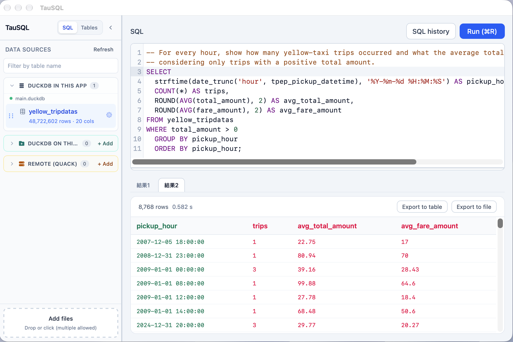

- 01Supports CSV, TSV and Parquet formats
- 02Import multiple files into DuckDB at once
- 03Import huge files fast in the background
- 04Analyze data with familiar SQL
- 05Browse large result sets comfortably
- 06Export query results to files (CSV, TSV, and Parquet)
- 07Write query results to another table
- 08Manage tables from the GUI
- 09Re-run queries from SQL history
- 10Open DuckDB files created elsewhere
- 11Connect remotely to Quack / DuckLake
- 12Your data is never sent outside your machine
Local-first SQL, powered by DuckDB
Analyze your files with SQL. Import with the mouse and analyze easily.
Import CSV, TSV and Parquet into DuckDB in TauSQL, and analyze them fast with SQL.
- MacOS
- No account required
- Works offline

Demo
See it in action
Short videos of the main steps, with Japanese narration.
Features
What you can do
Import, query and export — all in one window.
TauSQL has no analytics and no account. Remote connections only happen if you configure them.
Pricing
Core and Pro
Try every feature for 10 days. After the trial, Core stays free. Pro is for heavier work: larger imports, extra connections, and a few exports.
Core vs Pro
| Feature | Core (Free) | Pro (Paid) |
|---|---|---|
| CSV / TSV / Parquet import (preview, create & append) | Up to 10 files per import | 11+ files allowed |
| Bulk merge import | × | ○ |
| SQL execution, fast scrolling | ○ | ○ |
| Export results to CSV / TSV | ○ | ○ |
| Export results to Parquet | × | ○ |
| Save results as a table | × | ○ |
| Rename, delete, and inspect table schema | ○ | ○ |
| Reorder tables | ○ | ○ |
| SQL history (unlimited, including deleted tables) | ○ | ○ |
| Import history | ○ | ○ |
| Connected DuckDB files | 1 | Multiple |
| Quack remote DuckDB (DuckLake supported) | 1 | Multiple |
| Update checks | ○ | ○ |
Pro Monthly
$2.99/mo
Cancel anytime
Best value
Pro Yearly
$24.99/yr
About 8 months of Monthly
Pro Lifetime
$49.99
One payment, yours to keep
Every paid plan unlocks the same Pro features on up to 2 devices. License keys are delivered by Polar after checkout.
FAQ
Before you start
A few things to know about TauSQL.
Does my data leave this computer?
No. Imports, tables and queries stay in a local DuckDB file. TauLeap never receives them.
Which file types can I import?
CSV, TSV and Parquet (including .pq). You can mix files into one table when the schema matches.
Is there a cloud account?
No. There is no sign-in. Optional remote endpoints such as Quack are connections you choose.
Where is the database stored?
~/Library/Application Support/com.tauleap.tausql/main.duckdb
Is TauSQL free?
Core features are free. For the first 10 days you can try every Pro feature too. After the trial, core features stay available. Pro is $2.99 a month, $24.99 a year, or $49.99 once.
What happens to my data after the trial?
Nothing is deleted. Tables, history, and connections you already added stay on your machine. You can still open and query them. Only new Pro actions are limited.